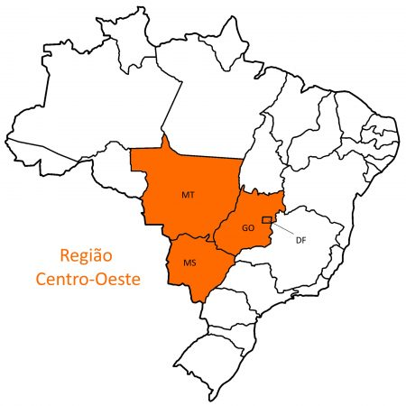

|  | A Região Centro-Oeste é formada por 4 unidades de federação, sendo: Distrito Federal - Brasília (DF) Goiás - Goiânia (GO) Mato Grosso - Cuiabá (MT) Mato Grosso do Sul - Campo Grande (MS) Sendo a segunda maior região em extensão territorial, ocupando aproximadamente 19% do territótio brasileiro, tem apenas um município entre os mais populosos do país, a nossa capital Brasília (DF) aparece em 3º lugar na lista. Além disso, a região abriga belezas naturais como a Chapada dos Guimarães e o Pantanal. |
|---|---|